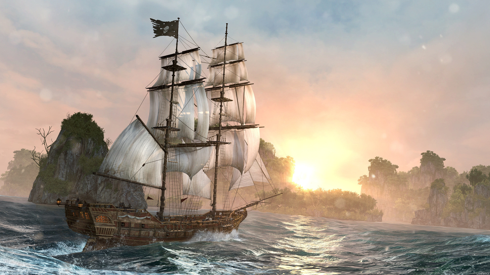
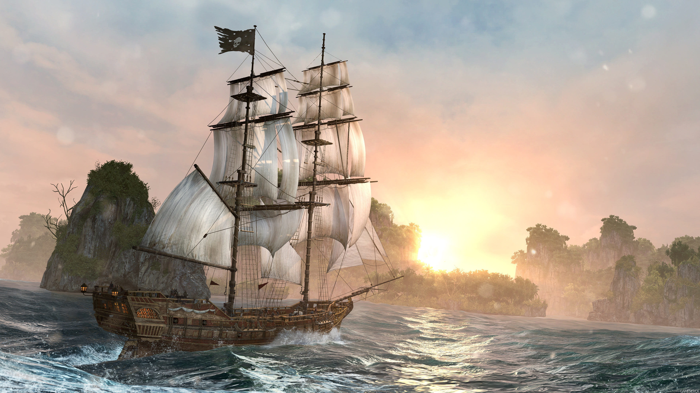
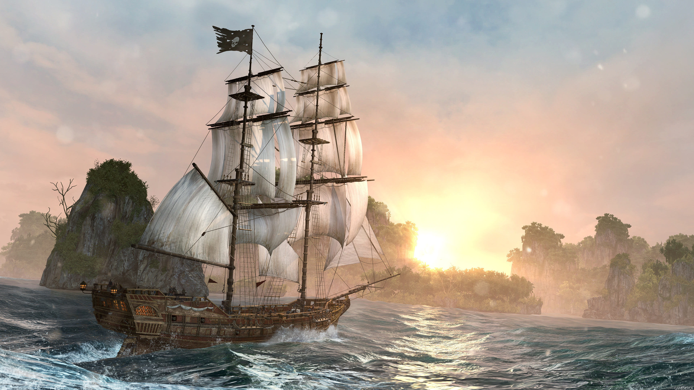

Claudia, my dearest sister. I have been in Acre a week now, safe and in high spirits, but prepared for the worst.
The men and women who have fed and sheltered me here also give me warning that the road to Masyaf is overrun by mercenaries and bandits not native to this land. What this could mean, I dread to guess.
When I first set out from Roma ten months ago, I did so with a single purpose. To discover what our father did not. In a letter written the year before my birth he makes mention of a library hidden beneath the stones of Masyaf castle. A sanctum full of invaluable wisdom.
So what will I find when I arrive there? Who will greet me? A host of eager Templars, as I fear most strongly? Or nothing but the whistling of a cold and lonely wind?
Masyaf has not been home to the Assassins for almost three hundred years now. Can we still claim it for our own? Are we welcome there?
I am weary of this fight, Claudia. Not because I am tired, but because our struggle seems to move in one direction only. Towards chaos.
Today I have more questions than answers. This is why I have come so far. To find clarity. To find the wisdom left behind by the great Altaïr, so that I may better understand the purpose of our fight. And my place in it.
Should anything happen to me Claudia, should my skills fail me, or my ambition lead me astray, do not seek retribution or revenge in my memory, but fight to continue the search for truth, so that all may benefit.
My story is one of many thousands, and the world will not suffer if it ends too soon.
